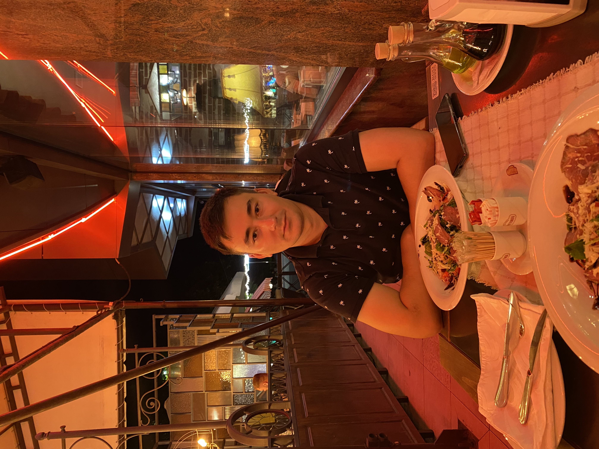

|  |
Salut, ma numesc CHICU ROMANSunt un Web Developer pasionat și dedicat, cu o experiență solidă în dezvoltarea și întreținerea aplicațiilor web moderne. Am abilități avansate în HTML, CSS, JavaScript și diverse framework-uri front-end și back-end, precum React, Angular, Node.js și Django. Experiența mea include lucrul cu baze de date SQL și NoSQL, precum și integrarea API-urilor RESTful și GraphQL. Am un ochi atent pentru detalii și un angajament față de standardele de codare curate și eficiente. De asemenea, am o înțelegere profundă a designului responsive și a accesibilității web, asigurându-mă că aplicațiile dezvoltate sunt accesibile pe toate dispozitivele și pentru toți utilizatorii. Sunt adeptul metodologiilor Agile și am experiență în lucrul în echipe de dezvoltare colaborative pentru a livra proiecte de succes la timp. |